quivermc
QUIVERMC is an adapted version of Andrew Roberts' ncquiverref. This function fixes a couple of problems with Matlab's quiverm function. The two primary issues with quiverm are as follows:
- Matlab's quiverm confoundingly mixes up u and v. By convention in the Earth sciences, u is the zonal component where eastward is positive and v is the meridional component where northward is positive. Matlab gets this wrong, but the quivermc function described here gets it right.
- For reasons related to ship travel and some old legacy code from Navy guys decades ago, Matlab's quiverm scales vectors in a strange way that depends on latitude. If you're plotting some absolute field like wind vectors, there is no physical reason that you would want to scale vectors in such a way that their zonal components shrink to zero at the poles.
In addition to fixing the problems described above, quivermc also allows a few extra options including color settings, arrow density, and options for converging or diverging flow.
Contents
Syntax
quivermc(lat,lon,u,v) quivermc(...,'units',unitString) quivermc(...,'color',arrowcolor) quivermc(...,'colormap',colorMap) quivermc(...,'colorbar','ColorbarLocation') quivermc(...,'density',densityVal) quivermc(...,'arrowstyle',arrowStyle) quivermc(...,'linewidth',lineWidth) quivermc(...,'reference',referenceScale) h = quivermc(...) [h,cb] = quivermc(...)
Description
quivermc(lat,lon,u,v) plots vectors of zonal and meridional components u and v at locations given by lat and lon.
quivermc(...,'units',unitString) prints any user-specified units alongside a reference vector.
quivermc(...,'color',arrowcolor) sets all arrows to the color given by arrowcolor, which can be a string (e.g. 'blue', or 'r') or RGB value. Default color is black.
quivermc(...,'colormap',colorMap) colors vectors scaled relative to their magnitude using any colormap such as jet or autumn(256).
quivermc(...,'colorbar','ColorbarLocation') places a colorbar at a specified location. The argument 'colorbar','on' may be used to place a colorbar to the outside right of the plot, or a location may be set as
- 'EastOutside', 'vertical', or 'on' Outside right
- 'SouthOutside' or 'horizontal' Outside bottom
- 'North Inside' plot box near top
- 'South Inside' bottom
- 'East Inside' right
- 'West Inside' left
- 'NorthOutside' Outside plot box near top
- 'SouthOutside' Outside bottom
- 'WestOutside' Outside left
quivermc(...,'density',densityVal) allows user-declared downsampling as a percentage of input data width. By default, if the input grid is larger than about 50x50, quivermc will attempt to downsample your data to some dimensions close to 50x50. This is because large datasets take time to plot, and the arrows become so small they're hard to see. If your dataset is 400x400 and you would like to plot about 100 arrows by 100 arrows instead of the default 50x50, use the name-value pair 'density',25 to specify 25 percent of the data are to be plotted in each dimension.
quivermc(...,'arrowstyle',arrowStyle) specifies whether the arrow's tail or tip is located at its respective data point. By default, arrows are centered about their data points. To pin arrow tails at their data points, declare 'arrowstyle','tail' or 'arrowstyle','divergent'. To pin arrow heads at their data points choose 'arrowstyle','tip' or 'arrowstyle','convergent'.
quivermc(...,'linewidth',lineWidth) sets the linewidth of plotted arrows in points.
quivermc(...,'reference',referenceScale) declares the scale by which arrows are plotted. Can be 'median', which scales vectors relative to the median magnitude, 'max', which scales vectors relative to the maximum magnitude, or 'equal' to make all vectors equal in size. The referenceScale may also be a scalar value of your choosing. Default is 'max'.
h = quivermc(...) returns the vector handles of plotted arrow objects.
[h,cb] = quivermc(...) returns the handle cb of the colorbar.
Examples
% Make up some data: load wind u v u = squeeze(u(:,:,1)); v = squeeze(v(:,:,1)); u(1:30,:) = u(1:30,:)+5; u(31:end,:) = u(31:end,:)-3; lat = repmat((20:-1:-14)',1,41); lon = repmat(-160:-120,35,1); % Initialize a map: worldmap([min(lat(:))-1 max(lat(:))+1],[min(lon(:))-1 max(lon(:))+1]); cla; % Use the quivermc function: quivermc(lat,lon,u,v)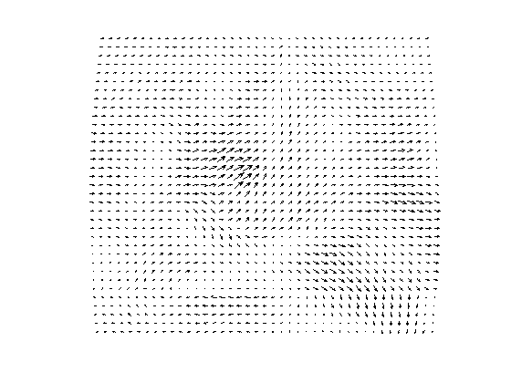
Specify units:
cla % clears the data that was plotted above quivermc(lat,lon,u,v,'units','miles per hour')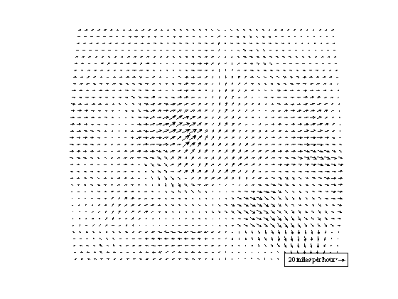
The quivermc function tries to figure out the best reference value for units, but you don't want your reference scale to be referenced to 20 mph--you'd much rather reference 10 mph.
cla quivermc(lat,lon,u,v,'units','miles per hour','reference',10)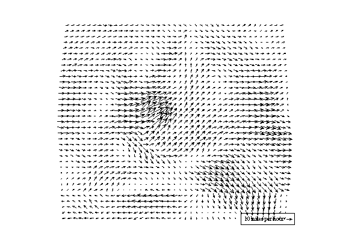
Make all arrows one color by one of Matlab's color names:
cla quivermc(lat,lon,u,v,'color','b')
Make all arrows one color by one by an arbitrary rgb value:
cla
quivermc(lat,lon,u,v,'color',[.2 .4 .8])
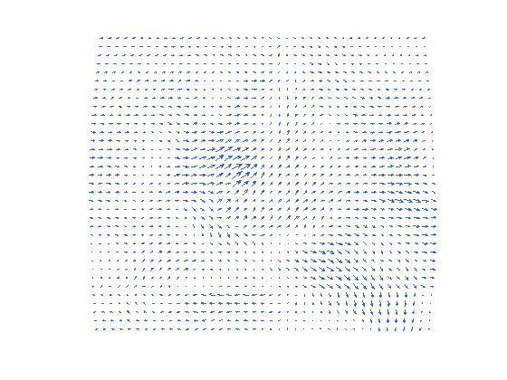 Instead of a single color, declare a colormap of your own:
cla quivermc(lat,lon,u,v,'colormap',hot(256),'units','m/s')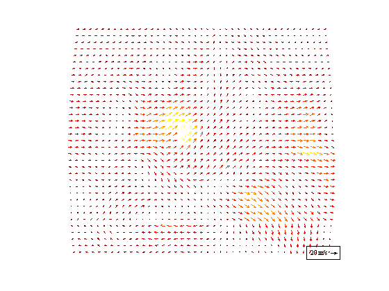
Include a colorbar:
cla quivermc(lat,lon,u,v,'colormap',hot(256),'units','m/s','colorbar','on')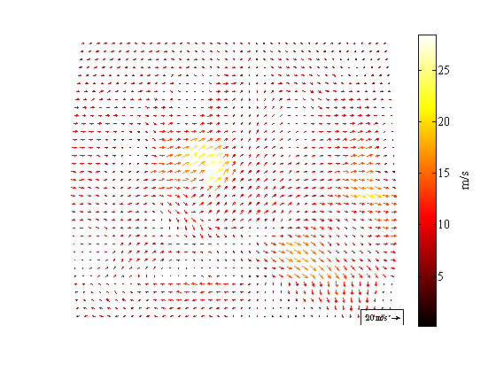
Place the colorbar somewhere fancy:
colorbar off % Deletes the one we just created above cla quivermc(lat,lon,u,v,'colormap',jet,'units','m/s','colorbar','northoutside')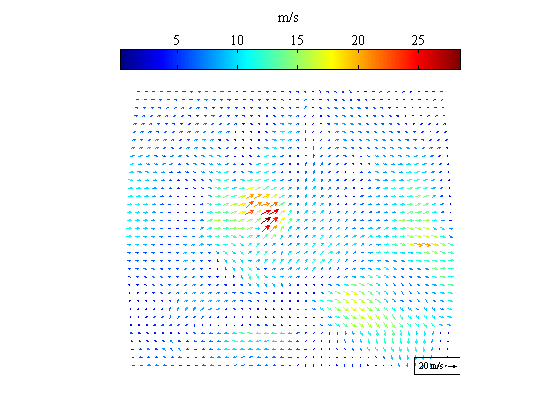
The label on that colorbar feels a bit incomplete. Let's return a handle for the colorbar and label it accordingly:
colorbar off % Deletes the one we just created above cla [~,cb] = quivermc(lat,lon,u,v,'colormap',jet,'colorbar','northoutside'); xlabel(cb,'Wind speed, meters per second')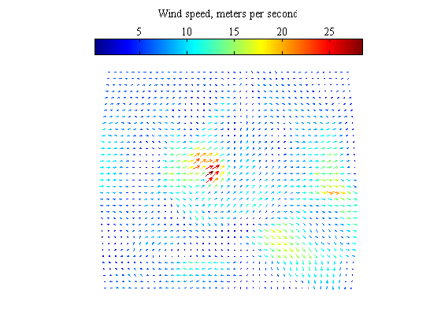
Downsample the number of vectors plotted by about a factor of three in each dimension:
colorbar off cla quivermc(lat,lon,u,v,'density',33.3,'colormap',jet)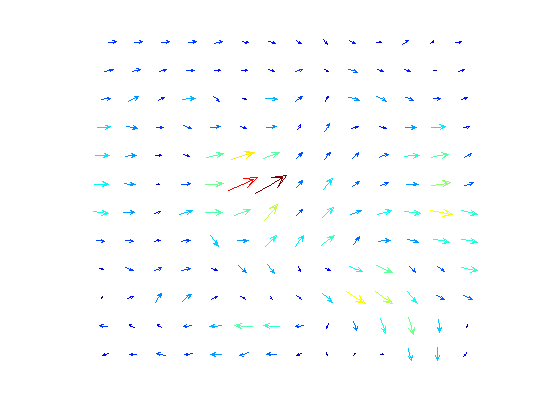
Fatten up those arrows:
cla quivermc(lat,lon,u,v,'density',33.3,'colormap',jet,'linewidth',2)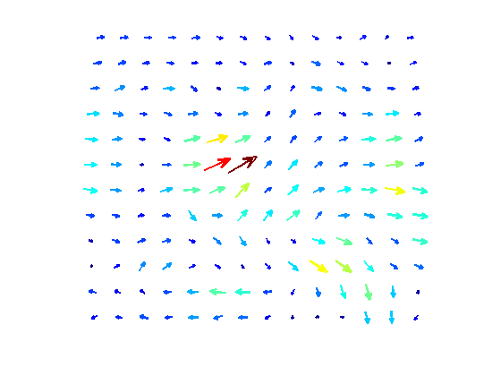
Make all arrows the same size:
cla quivermc(lat,lon,u,v,'density',33.3,'colormap',jet,'linewidth',2,'reference','equal')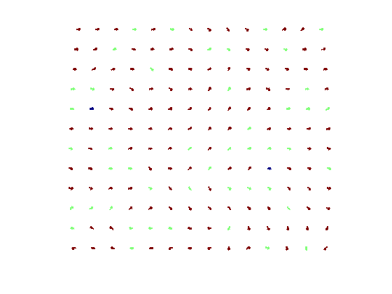
Show arrows with tails pinned at their datapoints (This is good for divergent flow):
cla quivermc(lat,lon,u,v,'density',33.3,'arrowstyle','divergent','color',[.4 .6 .2])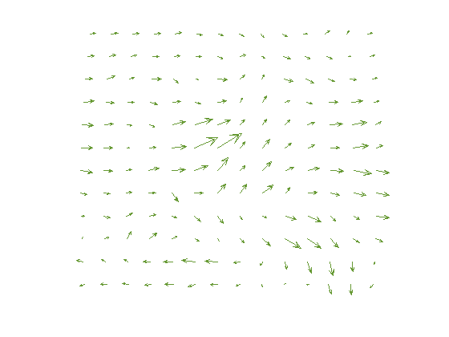
Scale vectors relative to the median vector size instead of the max:
cla quivermc(lat,lon,u,v,'density',33.3,'arrowstyle','divergent','color',[.4 .6 .2],'reference','median')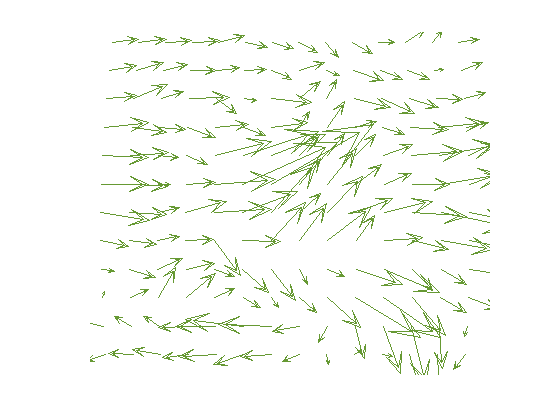
The example image used for the quivermc function is of the ice velocity of Totten Glacier, Antarctica. It was created with the measures function, which employs quivermc. Velocity vectors are then overlaid on a MODIS MOA satellite image as follows
figure modismoa('totten glacier',200) h = measures('vel','totten glacier','mapwidth',200,'colormap',jet(256),... 'density',7,'units','m/a','linewidth',1); scalebar('length',50,'color','w')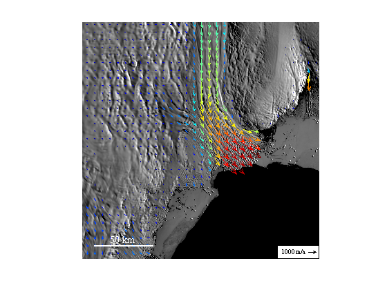
Author Info
The quivermc function is an adapted version of Andrew Roberts' ncquiverref. Chad Greene of the University of Texas at Austin and UT's Institute for Geophysics took away some of the functionality of ncquiverref and made it purely map-centric in July of 2014. In August 2014, a change was made to allow colorbars, and the tick marks of the colorbars are now set with John Barber's quite wonderful calcticks function, which is included as a subfunction in quivermc.